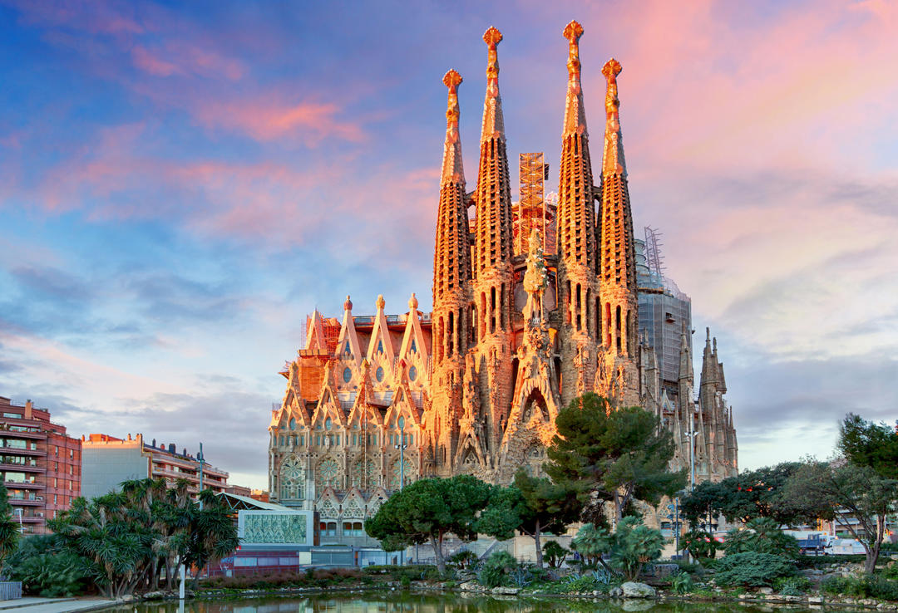
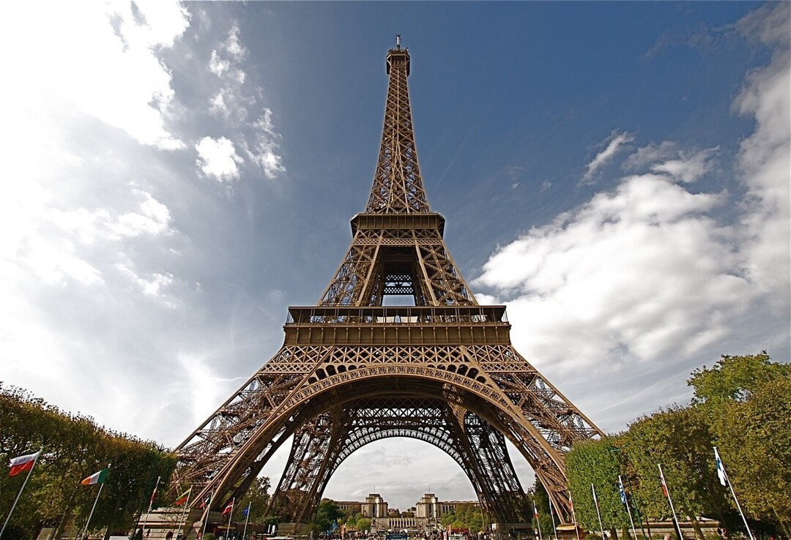
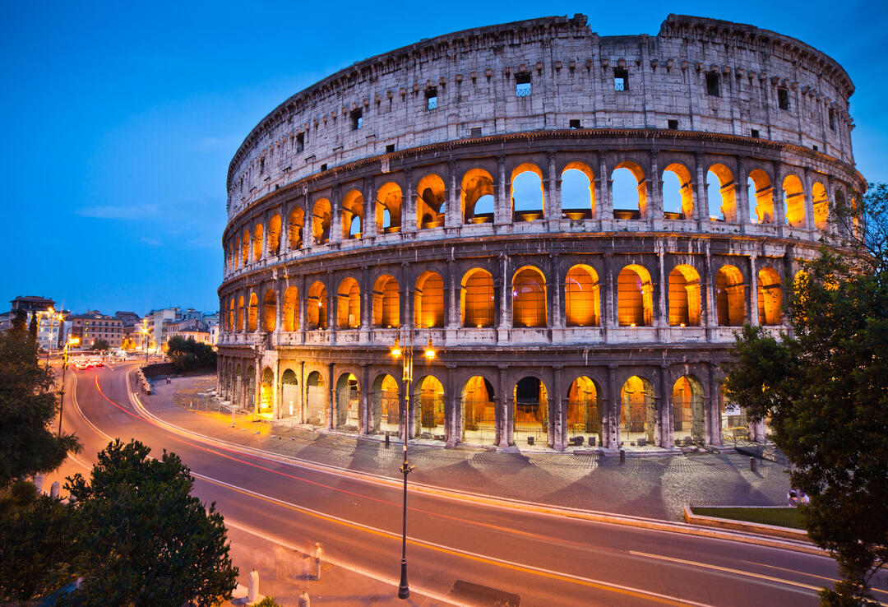
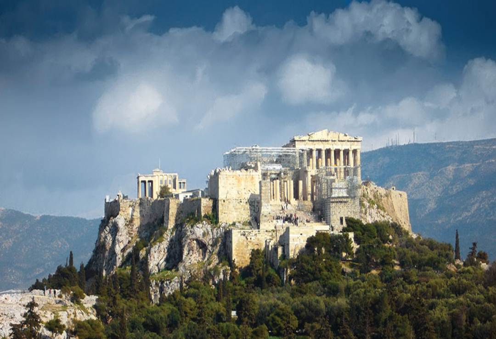

Entdecke die Welt mit uns - unvergessliche Reiseerlebnisse garanriert!
Willkommen bei unserer Tourismusfirma!
Wir sind ein engagiertes Team von Reiseexperten, das es sich zum Ziel gesetzt hat, Ihnen unvergessliche Reiseerlebnisse zu bieten. Wir organisieren maßgeschneiderte Touren und Aktivitäten, um sicherzustellen, dass Ihre Reise einzigartig und auf Ihre individuellen Bedürfnisse abgestimmt ist. Mit unserer Leidenschaft für Reisen und unserer umfassenden Erfahrung in der Branche sind wir der perfekte Partner für Ihre nächste Reise.
Entdecken Sie unsere Reiseziele und lassen Sie sich inspirieren für Ihren nächsten Traumurlaub!
Spanien
Spanien ist bekannt für seine Sonne, Strände, kulturelles Erbe und leckeres Essen. Madrid, Barcelona, Sevilla, Valencia und die Inseln Kanaren und Balearen sind nur einige der wunderbaren Orte, die Sie besuchen sollten.
Frankreich
Frankreich ist bekannt für seine Geschichte, Architektur und Romantik. Paris, Lyon, Marseille, Nizza und Straßburg sind Städte, die Sie nicht unberührt lassen werden. Frankreich ist auch ein Weltzentrum des Weinbaus, und Sie können verschiedene französische Weine in verschiedenen Regionen des Landes probieren.
Italien
Italien ist ein Land mit vielen schönen Städten, die reich an Geschichte, Kunst und Kultur sind. Rom, Florenz, Venedig, Neapel und Mailand sind einige der beliebtesten Reiseziele in Italien. Darüber hinaus ist Italien für seine Küche bekannt, und Sie können verschiedene italienische Gerichte und Weine probieren.
Griechenland
Griechenland ist ein Land, das reich an Geschichte und Architektur sowie an wunderschönen Stränden und Inseln ist. Athen, Thessaloniki, Kreta, Rhodos und Santorin sind einige der beliebten Reiseziele in Griechenland. Griechenland ist auch bekannt für seine Küche, und Sie können verschiedene griechische Gerichte und Getränke probieren.
Unsere besten Angebote
Entdecken Sie unsere besten Angebote und profitieren Sie von unseren speziellen Deals für unvergessliche Reisen
Urlaub in den Bergen: Skifahren und Wellness
Der Skigebiet in Italien ist ein ideales Ziel für Wintersportfans. Das Resort befindet sich in den Bergen und bietet viele Abfahrten für Skifahrer und Snowboarder unterschiedlicher Fähigkeiten. Darüber hinaus gibt es viele Restaurants, Cafés und Bars, in denen Sie lokale Gerichte probieren und die Atmosphäre der italienischen Gastfreundschaft genießen können. Eine ausgezeichnete Infrastruktur, schöne Ausblicke und eine angenehme Atmosphäre machen das Skigebiet in Italien zu einem großartigen Ort für Winterurlaub.
Mehr erfahrenSpanische Leidenschaft entdecken: Eine maßgeschneiderte Reise durch Barcelona, Madrid und die Küste
Erkunden Sie die faszinierende Kultur, die atemberaubenden Strände und das pulsierende Nachtleben Spaniens. Genießen Sie Sonne, Sangría und Flamenco auf einer maßgeschneiderten Reise nach Barcelona, Madrid oder an die Küste.
Mehr erfahren
Antike Wunder und Inselzauber: Eine maßgeschneiderte Reise durch Athen, Santorini und Delphi
Tauchen Sie ein in die antike Geschichte, die malerischen Inseln und die köstliche mediterrane Küche Griechenlands. Erkunden Sie die faszinierenden Ruinen von Athen, entspannen Sie an den traumhaften Stränden von Santorini oder erkunden Sie die historischen Stätten von Delphi auf einer maßgeschneiderten Griechenlandreise.
Mehr erfahrenEleganz, Kunst und Gaumenfreuden: Eine maßgeschneiderte Reise durch Paris, die Provence und die französische Riviera
Erleben Sie die Eleganz, die Kunst und die kulinarischen Köstlichkeiten Frankreichs. Besuchen Sie das romantische Paris und bestaunen Sie den Eiffelturm, entdecken Sie die malerische Landschaft der Provence oder genießen Sie den Charme der französischen Riviera auf einer maßgeschneiderten Reise nach Frankreich. Mehr erfahren
Kontakte
Für weitere Informationen oder Buchungen kontaktieren Sie uns gerne:
- Telefon: +491722925662
- E-Mail: turismus.servis@gmail.com
- Adresse: In der Neckarhelle 85, 69118 Heidelberg